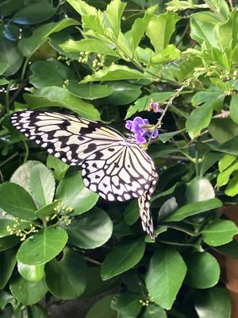
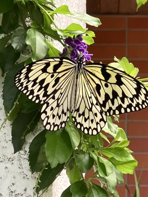

うるがいの話 ある日
最新: 郵便ポストの鍵【うるがいの話 ある日】とは 一日だけのプログです
『うるがいの話』の最新一日だけのプログで、通信料が少なく経済的だ。カニの画像をクリックすると全ての日付が載る『うるがいの話』サイトを表示します
|
|
【うるがいの話】 うるがい(ｳﾙｶﾞｲ urugai)とは、『もずくがに』の名前でとても大きくなります。 |
|---|---|
|
|
【カミマヤーの話】 猫のことを方言でマヤーといいます。カミマヤー（kamimayaa）とは、神の猫のことです。 |
|
【たながぁの音楽】 たながぁ（ﾀﾅｶﾞｰ tanagaa）とは手長えびのことで、何種類かあり大きいのは車 エビぐらいになります。 |

|
【ぶながぁの話】 ぶながぁ(ﾌﾞﾅｶﾞｰ bunagaa)とは、赤い髪の毛、赤い身体、そして身長は１ｍ２０ｃｍ ぐらい、川の蟹を食べているの目撃された。場所は沖縄県国頭郡大宜味村のと ある村僕の隣近所に住んでいる爺さんから、聞いた話です。 |
|
|
【ギーマの話】 ギーマ(giima)とは、山原の里山に咲くスズランに似た、 花を付けます。実は食べられます、 気が付くと口の周りが紫になっています。 |
2025年06月17日 (火）郵便ポストの鍵
15:34
ポストの鍵も渡さないといけないかもとヨメに言うと、最初の不動
産の担当者が、２月２７日に郵便ポストの鍵もと言われた。ムカ！
自分に都合のいい所だけ言うとんでもない不動産だったと改めて思
う。

小さな不動産の担当者と不動産売買契約書を１時間以上かけて、契
約書を確認する。ン、まともである。経験豊富な担当者は、契約直
後に買主（翌日）、または売主（１週間）に亡くなったため契約が
無しとなったケースも話してくれた。キモとなる告知書は丁寧に書
くのでまだ、時間がかかるとのことだった。訳あり物件だが、買主
側にも了解済でホッとしている。
打ち合わせの前に、マンションへ行く。畳が残っているのでどうす
るのですかと言うと、『現状維持です』と買主が畳屋さんと畳の張
替えなど調整するとのこと。クラーが２台あり、１台は１０年だが
まだ使えたのですが、『二つとも撤去します』。７年を超えるとい
つ故障するか分からないからとこと。電気は？、『私どもで買主と
の切り替えの手続きを電力会社に行います』。ホー、なるほど。
この後、買主と契約書の確認を行い、月末を目途に登記を行う司法
書士なども交えて契約手続きを行う予定である。あのー、ホームペ
ージにまだ物件情報が載っているのですが、これは？、『契約ば成
立した後で消します』。なるほど、あと買主さんもいろいろな面で
安心できる方たちなので良かったですと、言うと『運でしょうね』
。確かに、なんとか６月末に終えたいですね、７月は・・、『７月
５日のことですか』、ハイ・・・・。
